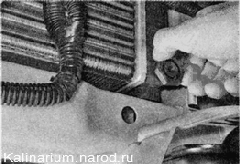
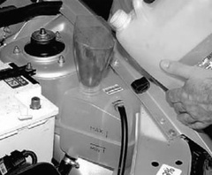
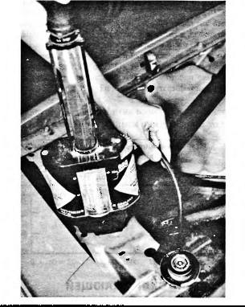
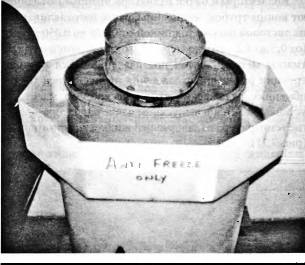

Охлаждающая жидкость - заменаОхлаждающую жидкость заменяем через 75 000 км пробега, либо через пять лет, в зависимости от того, что наступит раньше. Для заправки используется жидкость с температурой замерзания не выше -40 °С Объём системы охлаждения двигателя, включая систему отопления салона 7,84 л. Для выполнеиия работы потрeбуется широкая емкость объемом не менее 8 л. Работу удобнее выполнять на смотровой канаве или эстакаде. Смешивание охлаждающих жидкостей разных марок не допускается. Последовательность выполнения 1. Подготавливаем автомобиль к выполнению работы. 2. Снимаем брызговик двигателя или защиту картера (если установлена). 3. Подставляем под сливное отверстие радиатора емкость объемом не менее 8 л. Совет Чтобы уменьшить разбрызгивание охлаждающей жидкости при ее сливе, перед выполнением следующей операции не отворачивайте пробку расширительного бачка. 4. Отворачиваем пробку сливного отверстия радиатора и сливаем жидкость в емкость. 5. Переставив емкость под блок цилиндров, торцовым ключом на 13 мм отворачиваем пробку сливного отверстия блока цилиндров и сливаем оставшуюся в нем жидкость. 6. После того как жидкость перестанет вытекать из блока цилиндров, заворачиваем обе пробки на место. 7. Отворачиваем и снимаем пробку расширительного бачка и устанавливаем в бачок воронку. 
8. Заливаем в расширительный бачок новую охлаждающую жидкость. Совет Используйте охлаждающую жидкость с температурой замерзания на 10-15 "С ниже среднестатистической температуры в зимний период в регионе, в котором эксплуатируется автомобиль. 9. Жидкость заливаем до верхней метки расширительного бачка. Запускаем двигатель и даем ему поработать на повышенных оборотах до включения электровентилятора. При понижении уровня в бачке доливаем жидкость. Общая информация по охлаждающей жидкости АНТИФРИЗЫ ЗАМЕРЗАЮТ Смесь антифриза с водой является примером состава, температура замерзания которого отличается от температур замерзания входящих в него компонентов — чистого антифриза и чистой воды. Точка замерзания жидкостей Чистая вода 0°С Чистый антифриз* -18°С Смесь: 50/50 -37°С Смесь: 70% антифриза на 30% воды -64°С *Чистый антифриз обычно представляет собой 95% раствор этиленгликоля, в котором содержится от 2% до 3% воды, и от 2% до 3% добавок. В зависимости от процентного содержания воды антифриз, продаваемый в канистрах, замерзает при температурах от -13°С до -22°С. Следовательно, проще всего просто запомнить, что антифриз замерзает, как правило, при температуре около -18°С. Точка кипения смеси антифриза с водой также зависит от концентрации компонентов смеси.
ПРОВЕРКА ОХЛАЖДАЮЩЕЙ ЖИДКОСТИ С ПОМОЩЬЮ АРЕОМЕТРА Охлаждающую жидкость можно проверить с помощью ареометра. Ареометром измеряется плотность охлаждающей жидкости. Чем выше ее плотность, тем выше концентрация антифриза в воде. Большинство ареометров для охлаждающей жидкости сразу показывают точку замерзания и точку кипения (рис. 7.15). Если двигатель перегревается, а ареометр показывает значение, близкое к -46°С, то это означает, что в системе охлаждения находится чистый антифриз. Лучше всего, когда точка замерзания используемой охлаждающей жидкости находится ниже -29°С, а точка кипения — выше 112°С. Рис. 7.15. Проверка точки замерзания и точки кипения охлаждающей жидкости с помощью ареометра Если 50% — это хорошо, то 100% должно быть еще лучше Владелец автомобиля считал, что в системе охлаждения просто не может образоваться ни лед, ни ржавчина, потому что вместо смеси "50 на 50" антифриза с водой он залил в свою машину стопроцентный антифриз (этиленгликоль). Но когда температура воздуха упала до -29°С, охлаждающая жидкость в радиаторе замерзла и он лопнул. (Чистый антифриз замерзает при температуре около -18°С). После того как радиатор был разморожен, его пришлось ремонтировать. Владелец автомобиля был рад уже хотя бы тому, что блок цилиндров двигателя не лопнул. Для максимальной защиты от замерзания, при сохранении достаточно высокой эффективности теплообмена, используйте смесь антифриза с водой в равных пропорциях. Такая смесь является наилучшим компромиссным вариантом по температурным характеристикам и эффективности теплопередачи, необходимым для работы системы охлаждения. Не превышайте концентрацию антифриза в растворе выше 70% (30% воды). При увеличении концентрации антифриза (вплоть до 70%) температура кипения смеси возрастает, температура замерзания смеси снижается, но одновременно снижается эффективность теплопередачи смеси. Ветер здесь совершенно ни при чём Ветровой коэффициент теплопотерь — это поправочный коэффициент, учитывающий дополнительные теплопотери при данной температуре, в зависимости от скорости ветра. Он, по существу, определяет эквивалентную температуру, при которой теплопотери с поверхности незащищенной кожи при полном отсутствии ветра равны теплопоте-рям при данной температуре и данной скорости ветра. Поскольку этот коэффициент представляет собой коэффициент теплопотерь для незащищенной кожи, ветровая температура неприменима для оценки морозостойкости охлаждающей жидкости. Обдув радиатора ускоряет охлаждение жидкости, но не влияет на температуру, до которой может остыть охлаждающая жидкость. Она зависит от температуры воздуха, на которую скорость ветра не влияет. Не верите? Убедитесь в этом сами. Внесите в комнату термометр и подождите, пока его показания установятся. Теперь включите вентилятор и направьте поток воздуха на термометр. На его показания это не повлияет. РЕГЕНЕРИРОВАННАЯ ОХЛАЖДАЮЩАЯ ЖИДКОСТЬ Отработанная охлаждающая жидкость (антифриз и вода) подлежит регенерации. В отработанной охлаждающей жидкости могут находиться металлы, — свинец, алюминий и железо, которые накапливаются в процессе ее работы в двигателе. В регенерационных установках производится очистка жидкости от этих металлов и загрязнений и восстановление концентрации истощенных добавок. Регенерированная охлаждающая жидкость после восстановления опять становится как новая и ее можно повторно использовать в автомобиле. ВНИМАНИЕ Большинство производителей автомобилей предупреждают, что повторное использование охлаждающей жидкости допускается только после ее регенерации и восстановления процентного содержания добавок. ХРАНЕНИЕ ОТРАБОТАННОЙ ОХЛАЖДАЮЩЕЙ ЖИДКОСТИ Отработанную охлаждающую жидкость, слитую из автомобиля, обычно можно сливать в одну емкость с отработанным маслом. В установках, используемых для регенерации отработанного масла, охлаждающая жидкость легко отделяется от отработанного масла. Уточните у компаний, которым решением местных органов власти или правительством штата поручено выполнять утилизацию этих отходов, какой именно способ хранения отработанной жидкости установлен в вашем районе (рис. 7.16). Рис. 7.16. Отработанная охлаждающая жидкость должна храниться отдельно, в герметичной канистре, до ее регенерации или утилизации в соответствии с федеральными законами, законами штата и местными законами. Обратите внимание на то, что емкость для сбора отработанной охлаждающей жидкости стоит в поддоне, — это сделано с целью не допустить пролива охлаждающей жидкости из емкости, в которой она хранится |